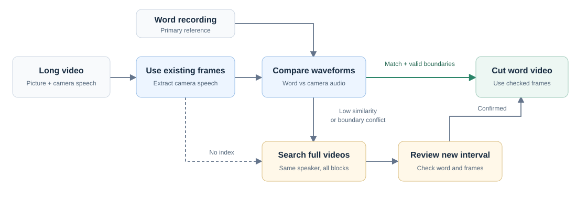

Two distinct problems: a shifted word interval and a mismatch between recording blocks.
F04_B3_UW14
Finding “lawyer” again.
Word-level microphone recording2.262 s · unchanged
Camera speech — original index5.172 s
012345 s
Recorded-waveform image excerpts, not audio playback. Each track is peak-normalized and begins at its own clip boundary; no fitted time shift or denoising. Blank space after a short track is not added audio.
M07 / recording-block association
Follow the audio to its actual video.
All 765 historical M07 records required source reassignment. Select an audio block to see its corrected video sources, including exceptions.
Word-audio labelsM07 · B1255 utterances
→
Counts are read from the published final frame index. This identifies the actual source associations; it does not establish who introduced the original naming or processing error.
03 / Follow the method
Listen to the video. Then find the frames.
Long videos carry a speech channel tied to their picture timeline. We compare it with the word recording to locate the matching utterance.
Try a path
▤Long videoPicture + camera speech
Word recordingPrimary reference
Match + valid boundariesLow similarity or boundary conflictNo indexConfirmed
1 / 5Ready · click play or choose a stage
Stage 01
Check the existing interval
Extract camera speech at the recorded frame boundaries.
Illustrated walkthrough, not a live processing job.
Unusually long or incorrect word audio is reviewed separately: remove confirmed non-target content, or use the matched camera speech when necessary. The waveform score alone never approves a sample.
See the full workflow and matching principle

Normalized cross-correlation compares centered waveform shapes across candidate positions. Word order, neighboring intervals and manual frame-level review support the final choice. Thresholds depend on the review stage; there is no universal pass score.
Install FFmpeg/ffprobe separately. Python 3.10 on Linux is the tested setup. Obtain UASpeech through its official access process; this site does not distribute corpus audio or video.